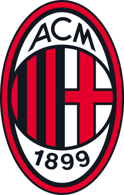
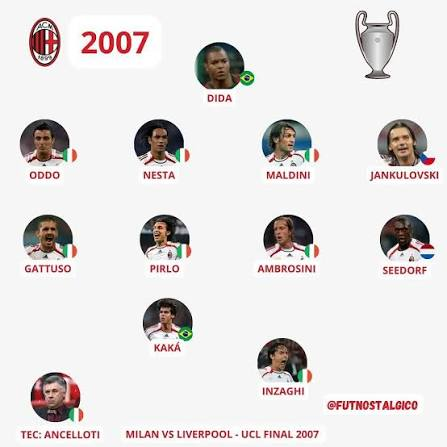

AC Milan is one of the most historic and successful football clubs in the world. Founded in 1899 in the city of Milan, the club is known as the Rossoneri (The Red and Blacks) because of its iconic red-and-black striped shirts. AC Milan has built a global reputation through decades of domestic and European success, playing many of its home matches at the legendary San Siro. The club has won 19 Italian league titles (Serie A), 5 Coppa Italia trophies, and 8 Italian Super Cups. Internationally, Milan is even more famous, having won the UEFA Champions League/European Cup 7 times—more than any other Italian club and second only to Real Madrid CF in Europe. Their trophy cabinet also includes 5 UEFA Super Cups, 2 European Cup Winners' Cups, 3 Intercontinental Cups, and 1 FIFA Club World Cup, giving them around 50 major trophies overall.
